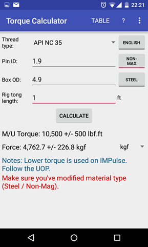
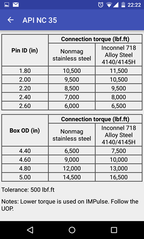
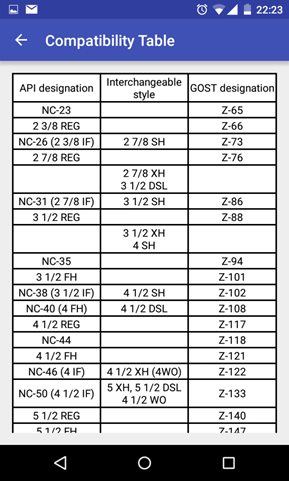
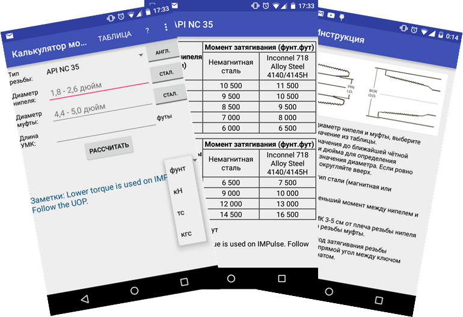

Torque calculator
Trying myself in Android programming (Android SDK/Java)
Torque Calculator is an Android app, which helps directional driller or MWD engineer to acquire correct torque values to be applied on threaded connections at the wellsite during make up BHA. Referenced to Schlumberger standards.

- Thread selection
- Enter dimensions in range
- Select material type
- Enter tong length (optional)
- Some thread types have extra notes (not well known)
- Display force in: lbf, kN, ton-force, kgf
- Tolerance included

- Reference to original tables in TIR-005-AG
- In English or Metrics units

- Pocket reference from ISO 10424-2:2007 on thread types compatibility

- Consistent approach to torque calculations as per TIR-005-AG
- Easy to use, fast to go and saves time
- Available in English and Russian
- Spanish translation is coming
- Available for Android